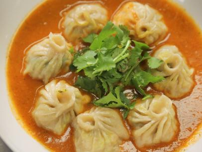

Momo

Description
Momo is a type of steamed filled dumpling in Tibetan and Nepali cuisine that is also popular in neighbouring Bhutan and India.Momo is usually served with a sauce known as achar influenced by the spices and herbs used within many South Asian cuisines.
Ingredients
- Flour
- Meat of any kind
- Onion
- Spices
- Tomato
- Green Chilly
Steps
- Take flour,water and a pinch of salt and make a dough out of it.
- Take small balls of the dough and make circular wrappings to place your fillings.
- In a separate bowl place meat, diced onions and whole lot of spices along with a bit of oil and mix it.
- Place a small portion of the filling inside the wrapper and close the dough.
- Place in the steamer for about 10 minutes
- Serve hot and enjoy!